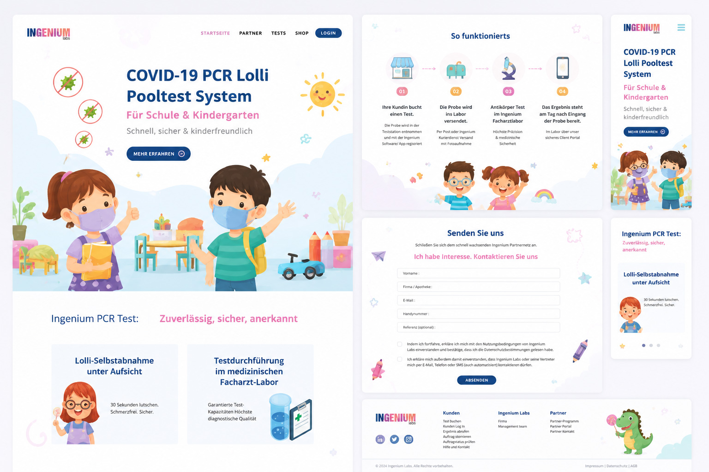
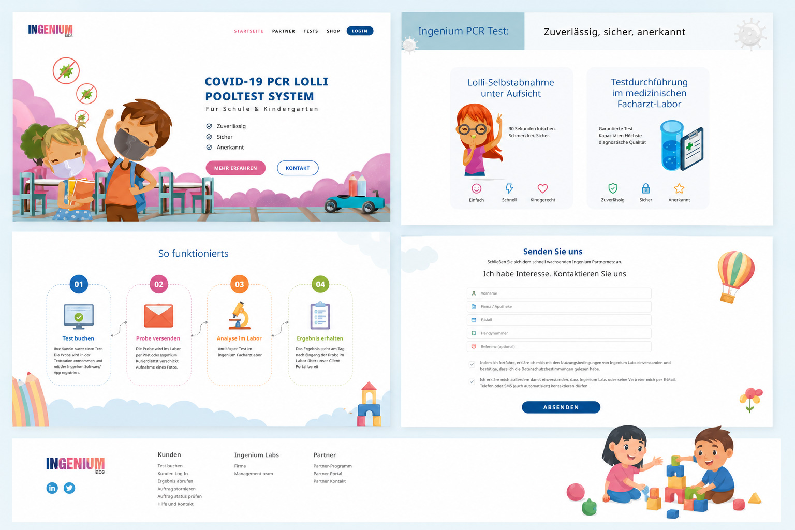
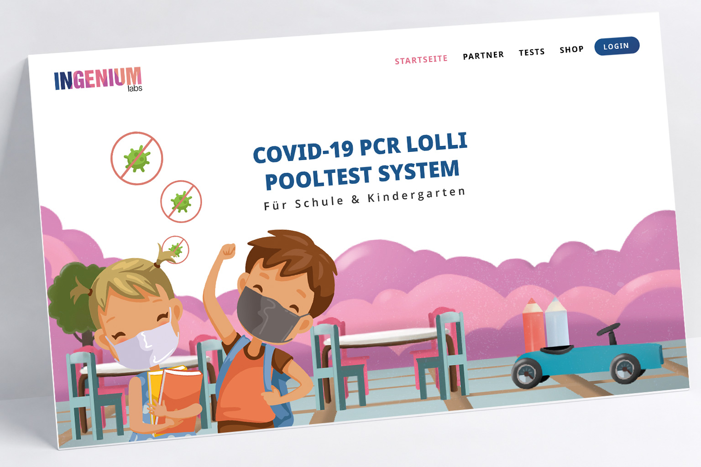

Website project · 2023
Kindergarten Platform
A playful and accessible website designed for kindergartens to simplify COVID-19 PCR lollipop pool testing.
Role
UX/UI Designer
Platform
Website
Focus
UX Research · Wireframing · Visual Design · Responsive Design · Design System · Prototyping
Tools
Figma · Wordpress · Illustrator · Photoshop

The Solution
Using soft colors, playful illustrations, and spacious layouts, the website transforms a complex healthcare service into an approachable digital experience for schools and families.

Outcome
The final design delivers a welcoming digital experience that helps schools and parents understand the testing process with confidence through clear communication and engaging visuals.

Next project